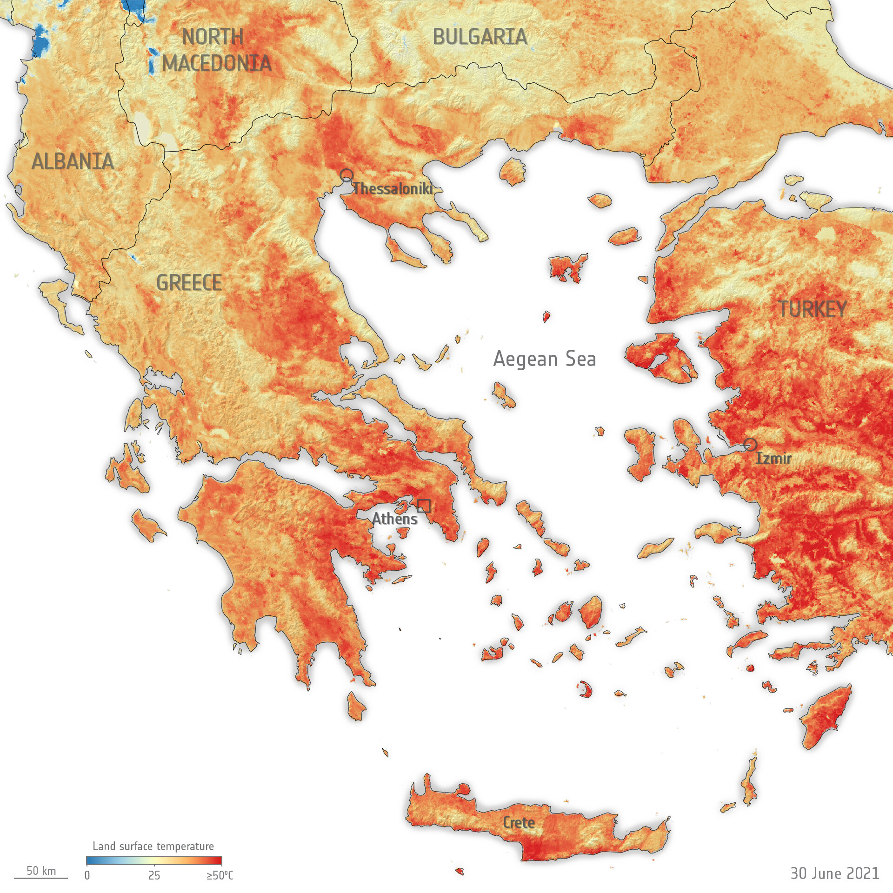

Weer en klimaat
Het kustklimaat is mediterraan, met hete droge zomers en milde natte winters. Het bergachtige binnenland, vooral in het noorden, heeft strenge winters en milde zomers. Over het algemeen liggen de zomertemperaturen rond de 25 tot 30 graden en de wintertemperaturen rond de 0 tot 10 graden. Het actuele weer (weerbericht) en een weersverwachting voor Albanië vind je op onze uitgebreide weer pagina. Uitgebreide informatie over het klimaat van Albanië vind je op Klimaatinfo.
Beste reistijd
Mei, juni, juli, augustus en september zijn de beste maanden om naar Albanië te reizen. In deze maanden heb je de grootste kans op mooi weer met weinig neerslag. De zon schijnt in deze periode ca. 10-11 uur per dag.
Kledingadvies
Het is raadzaam om stevig schoeisel en praktische kleding in 'laagjes' mee te nemen. Omdat in de Balkanlanden soms van het ene op het andere moment kan regenen is het goed om altijd een eenvoudig regenjasje of paraplu bij de hand te hebben.